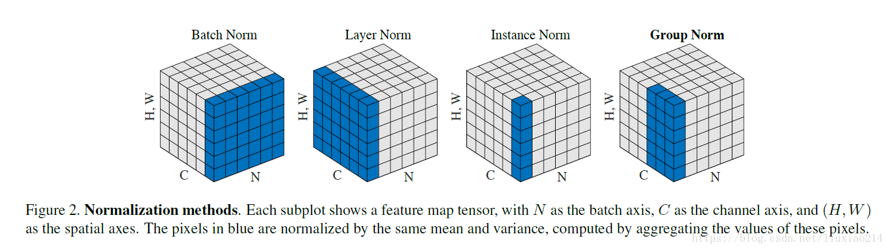
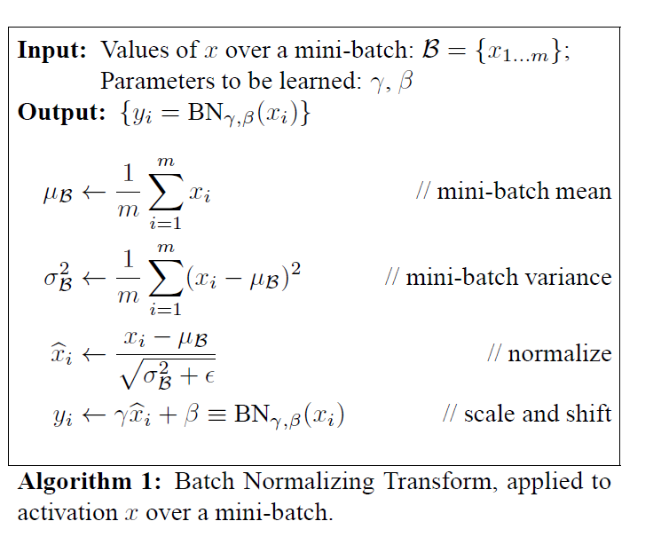
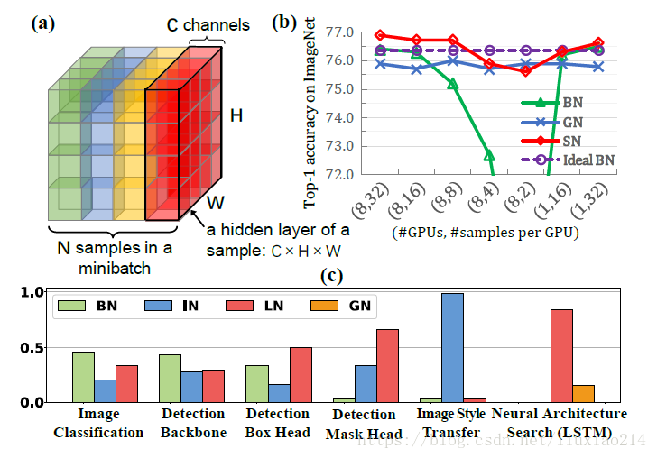

内容包含：BatchNormalization、LayerNormalization、InstanceNorm、GroupNorm、SwitchableNorm
#1.简述
1.1 论文链接
(1)、Batch Normalization
https://arxiv.org/pdf/1502.03167.pdf
(2)、Layer Normalizaiton
https://arxiv.org/pdf/1607.06450v1.pdf
(3)、Instance Normalization
https://arxiv.org/pdf/1607.08022.pdf
https://github.com/DmitryUlyanov/texture_nets
(4)、Group Normalization
https://arxiv.org/pdf/1803.08494.pdf
(5)、Switchable Normalization
https://arxiv.org/pdf/1806.10779.pdf
https://github.com/switchablenorms/Switchable-Normalization
1.2 整体介绍
归一化层，目前主要有这几个方法，Batch Normalization（2015年）、Layer Normalization（2016年）、Instance Normalization（2017年）、Group Normalization（2018年）、Switchable Normalization（2018年）；
将输入的图像shape记为[N, C, H, W]，这几个方法主要的区别就是在:
batchNorm是在batch上，对NHW做归一化，对小batchsize效果不好；
layerNorm在通道方向上，对CHW归一化，主要对RNN作用明显；
instanceNorm在图像像素上，对HW做归一化，用在风格化迁移；
GroupNorm将channel分组，然后再做归一化；
SwitchableNorm是将BN、LN、IN结合，赋予权重，让网络自己去学习归一化层应该使用什么方法。

#2.详细解说
##2.1 Batch Normalization

算法过程：
(1)、沿着通道计算每个batch的均值u
(2)、沿着通道计算每个batch的方差σ^2
(3)、对x做归一化，x’=(x-u)/开根号(σ^2+ε)
(4)、加入缩放和平移变量γ和β ,归一化后的值，y=γx’+β
加入缩放平移变量的原因是： 不一定每次都是标准正态分布，也许需要偏移或者拉伸。保证每一次数据经过归一化后还保留原有学习来的特征，同时又能完成归一化操作，加速训练。 这两个参数是用来学习的参数。
整体公式:
$y=\frac{x-\mathrm{E}[x]}{\sqrt{\operatorname{Var}[x]+\epsilon}} * \gamma+\beta$
前向传播CODE:
1 | import numpy as np |
pytorch中的API:
1 | torch.nn.BatchNorm1d(num_features, eps=1e-05, momentum=0.1, affine=True, track_running_stats=True) |
2.2 Layer Normalizaiton
batch normalization存在以下缺点：
(1)、对batchsize的大小比较敏感，由于每次计算均值和方差是在一个batch上，所以如果batchsize太小，则计算的均值、方差不足以代表整个数据分布；
(2)、BN实际使用时需要计算并且保存某一层神经网络batch的均值和方差等统计信息，对于对一个固定深度的前向神经网络（DNN，CNN）使用BN，很方便；但对于RNN来说，sequence的长度是不一致的，换句话说RNN的深度不是固定的，不同的time-step需要保存不同的statics特征，可能存在一个特殊sequence比其他sequence长很多，这样training时，计算很麻烦。
与BN不同，LN是针对深度网络的某一层的所有神经元的输入按以下公式进行normalize操作。
$\mu^{l}=\frac{1}{H} \sum_{i=1}^{H} a_{i}^{l} \quad \sigma^{l}=\sqrt{\frac{1}{H} \sum_{i=1}^{H}\left(a_{i}^{l}-\mu^{l}\right)^{2}}$
BN与LN的区别在于：
(1)、LN中同层神经元输入拥有相同的均值和方差，不同的输入样本有不同的均值和方差；
(2)、BN中则针对不同神经元输入计算均值和方差，同一个batch中的输入拥有相同的均值和方差。
(3)、LN用于RNN效果比较明显，但是在CNN上，不如BN。
前向传播代码：
1 | def Layernorm(x, gamma, beta): |
Pytorch API:
1 | torch.nn.LayerNorm(normalized_shape, eps=1e-05, elementwise_affine=True) |
2.3 Instance Normalization
BN注重对每个batch进行归一化，保证数据分布一致，因为判别模型中结果取决于数据整体分布。
但是图像风格化中，生成结果主要依赖于某个图像实例，所以对整个batch归一化不适合图像风格化中，因而对HW做归一化。可以加速模型收敛，并且保持每个图像实例之间的独立。
公式：$y_{t i j k}=\frac{x_{t i j k}-\mu_{t i}}{\sqrt{\sigma_{t i}^{2}+\epsilon}}, \quad \mu_{t i}=\frac{1}{H W} \sum_{l=1}^{W} \sum_{m=1}^{H} x_{t i l m}, \quad \sigma_{t i}^{2}=\frac{1}{H W} \sum_{l=1}^{W} \sum_{m=1}^{H}\left(x_{t i l m}-m u_{t i}\right)^{2}$
前向代码：
1 | def Instancenorm(x, gamma, beta): |
Pytorch API:
1 | torch.nn.InstanceNorm1d(num_features, eps=1e-05, momentum=0.1, affine=False, track_running_stats=False) |
2.4 Group Normalization
主要是针对Batch Normalization对小batchsize效果差，GN将channel方向分group，然后每个group内做归一化，算(C//G)HW的均值，这样与batchsize无关，不受其约束。
前向code：
1 | def GroupNorm(x, gamma, beta, G=16): |
Pytorch API:
1 | torch.nn.GroupNorm(num_groups, num_channels, eps=1e-05, affine=True) |
2.5 Switchable Normalization
本篇论文作者认为：
(1)、第一，归一化虽然提高模型泛化能力，然而归一化层的操作是人工设计的。在实际应用中，解决不同的问题原则上需要设计不同的归一化操作，并没有一个通用的归一化方法能够解决所有应用问题；
(2)、第二，一个深度神经网络往往包含几十个归一化层，通常这些归一化层都使用同样的归一化操作，因为手工为每一个归一化层设计操作需要进行大量的实验。
因此作者提出自适配归一化方法——Switchable Normalization（SN）来解决上述问题。与强化学习不同，SN使用可微分学习，为一个深度网络中的每一个归一化层确定合适的归一化操作。
公式：$\hat{h}{n c i j}=\gamma \frac{h{n c i j}-\Sigma_{k \in \Omega} w_{k} \mu_{k}}{\sqrt{\Sigma_{k \in \Omega} w_{k}^{\prime} \sigma_{k}^{2}+\epsilon}}+\beta$
$w_{k}=\frac{e^{\lambda_{k}}}{\Sigma_{z \in{\mathrm{in}, \ln , \mathrm{bn}}} e^{\lambda_{z}}}, \quad k \in{\mathrm{in}, \ln , \mathrm{bn}}$
$\mu_{\mathrm{in}}=\frac{1}{H W} \sum_{i, j}^{H, W} h_{n c i j}, \sigma_{\mathrm{in}}^{2}=\frac{1}{H W} \sum_{i, j}^{H, W}\left(h_{n c i j}-\mu_{\mathrm{in}}\right)^{2}$
$\mu_{\ln }=\frac{1}{C} \sum_{c=1}^{C} \mu_{\mathrm{in}}, \quad \sigma_{\ln }^{2}=\frac{1}{C} \sum_{c=1}^{C}\left(\sigma_{\mathrm{in}}^{2}+\mu_{\mathrm{in}}^{2}\right)-\mu_{\mathrm{ln}}^{2}$
$\mu_{\mathrm{bn}}=\frac{1}{N} \sum_{n=1}^{N} \mu_{\mathrm{in}}, \quad \sigma_{\mathrm{bn}}^{2}=\frac{1}{N} \sum_{n=1}^{N}\left(\sigma_{\mathrm{in}}^{2}+\mu_{\mathrm{in}}^{2}\right)-\mu_{\mathrm{bn}}^{2}$
前向传播CODE：
1 | def SwitchableNorm(x, gamma, beta, w_mean, w_var): |
3 结果比较

4 参考链接：
本篇大部分内容摘抄自https://blog.csdn.net/liuxiao214/article/details/81037416